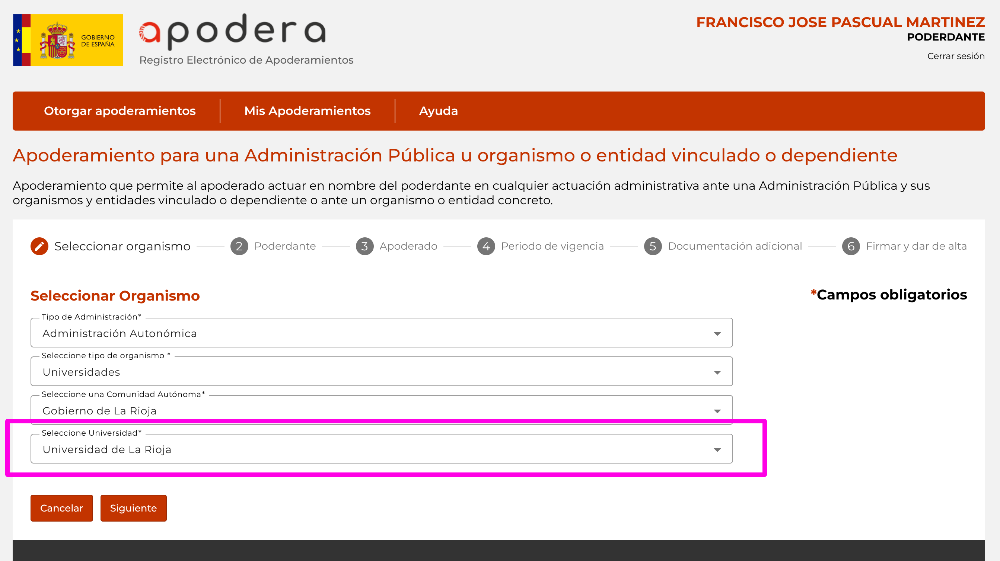

Apodera
Versión electrónica de los apoderamientos apud acta; permite apoderar a otras personas para hacer trámites en su nombre.
Apodera es el Registro Electrónico de Apoderamientos (REA) de la Administración General del Estado y permite a los interesados autorizar a personas físicas o jurídicas para actuar en su nombre en las relaciones con las Administraciones Públicas.

Apodera tiene una parte pública donde las personas registran sus apoderamientos y una parte privada de tramitación para la Administración.
Objetivos
En el Registro de Apoderamientos (parte pública):
- Aparecer en el tipo B de otorgamiento de apoderamientos.

En la aplicación del tramitador:
- Añadir tramitadores de la Universidad:
- Oficina de Atención a la Comunidad Universitaria (OACU): perfil consulta y registro (para los casos en que los apoderamientos sean en presencial).
- Secretaría General: perfil consulta.
- Oficina del Estudiante: para los trámites presenciales, especialmente la recogida de títulos.
- Asesoría Jurídica: para el bastanteo de poderes. No es el caso habitual. No se prevé que lleguen casos en los que AJ tenga que intervernir.
- Otras personas en servicios en los que esporádicamente se pueda necesitar atención presencial: Charo (Directora de Área Académica), Jesús (Jefe Personal).
Desarrollo realizado
- Adhesión al convenio CRUE-AGE de servicios horizontales para poder utilizar REA.
- Alta en Apodera para poder aparecer en los apoderamientos tipo B.
- Instrucción para limitar al contexto de la Universidad el registro de apoderamientos en presencial ante la OAMR, para evitar que personas físicas o jurídicas puedan inscribir apoderamientos para otros fines distintos de la Universidad. Por ejemplo, una empresa se persona en la OACU para registrar un apoderamiento para un juicio o trámite propio suyo.
- Contenido en la web de la OACU
- Noticia publicada
Tareas pendientes
- Oficina de Estudiantes:
- Añadir al megamenu de la web.
- Actualizar contenido de recogida de títulos para que apunten al texto de la instrucción, no el anuncio del TOE.
- Publicar la instrucción en normativa de AJUR y de la sede electrónica.
- Según se vaya utilizando, integrar dentro de los procedimientos de sede. Por ejemplo, al iniciar una instancia general, poder elegir si se actúa en nombre propio o como apoderado.